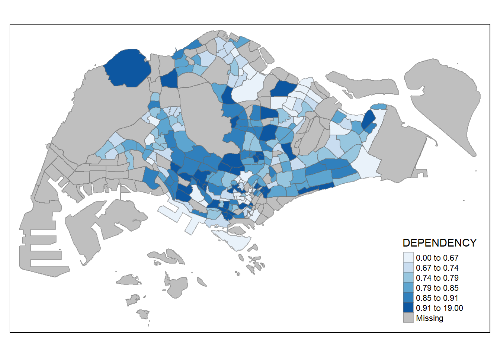

pacman::p_load(sf, tmap, readr, ggplot2, tidyverse)Hands-On Ex 1
Loading Packages
Loading Dataset (Geospatial Data)
Extracted the necessary data sets from the following sources:
Master Plan 2014 Subzone Boundary (Web) from data.gov.sg
Pre-Schools Location from data.gov.sg
Cycling Path from LTADataMall
mpsz = st_read(dsn = "data/geospatial",
layer = "MP14_SUBZONE_WEB_PL")Reading layer `MP14_SUBZONE_WEB_PL' from data source
`C:\zjjgithubb\ISSS624\HandsOnEx\HandsOnEx1\data\geospatial'
using driver `ESRI Shapefile'
Simple feature collection with 323 features and 15 fields
Geometry type: MULTIPOLYGON
Dimension: XY
Bounding box: xmin: 2667.538 ymin: 15748.72 xmax: 56396.44 ymax: 50256.33
Projected CRS: SVY21cyclingpath = st_read(dsn = "data/geospatial",
layer = "CyclingPathGazette") Reading layer `CyclingPathGazette' from data source
`C:\zjjgithubb\ISSS624\HandsOnEx\HandsOnEx1\data\geospatial'
using driver `ESRI Shapefile'
Simple feature collection with 2558 features and 2 fields
Geometry type: MULTILINESTRING
Dimension: XY
Bounding box: xmin: 11854.32 ymin: 28347.98 xmax: 42626.09 ymax: 48948.15
Projected CRS: SVY21preschool = st_read("data/geospatial/PreSchoolsLocation.kml")Reading layer `PRESCHOOLS_LOCATION' from data source
`C:\zjjgithubb\ISSS624\HandsOnEx\HandsOnEx1\data\geospatial\PreSchoolsLocation.kml'
using driver `KML'
Simple feature collection with 2290 features and 2 fields
Geometry type: POINT
Dimension: XYZ
Bounding box: xmin: 103.6878 ymin: 1.247759 xmax: 103.9897 ymax: 1.462134
z_range: zmin: 0 zmax: 0
Geodetic CRS: WGS 84Checking the Data
Simple data checking to verify that the data is correct.
st_geometry(mpsz)Geometry set for 323 features
Geometry type: MULTIPOLYGON
Dimension: XY
Bounding box: xmin: 2667.538 ymin: 15748.72 xmax: 56396.44 ymax: 50256.33
Projected CRS: SVY21
First 5 geometries:glimpse(mpsz)Rows: 323
Columns: 16
$ OBJECTID <int> 1, 2, 3, 4, 5, 6, 7, 8, 9, 10, 11, 12, 13, 14, 15, 16, 17, ~
$ SUBZONE_NO <int> 1, 1, 3, 8, 3, 7, 9, 2, 13, 7, 12, 6, 1, 5, 1, 1, 3, 2, 2, ~
$ SUBZONE_N <chr> "MARINA SOUTH", "PEARL'S HILL", "BOAT QUAY", "HENDERSON HIL~
$ SUBZONE_C <chr> "MSSZ01", "OTSZ01", "SRSZ03", "BMSZ08", "BMSZ03", "BMSZ07",~
$ CA_IND <chr> "Y", "Y", "Y", "N", "N", "N", "N", "Y", "N", "N", "N", "N",~
$ PLN_AREA_N <chr> "MARINA SOUTH", "OUTRAM", "SINGAPORE RIVER", "BUKIT MERAH",~
$ PLN_AREA_C <chr> "MS", "OT", "SR", "BM", "BM", "BM", "BM", "SR", "QT", "QT",~
$ REGION_N <chr> "CENTRAL REGION", "CENTRAL REGION", "CENTRAL REGION", "CENT~
$ REGION_C <chr> "CR", "CR", "CR", "CR", "CR", "CR", "CR", "CR", "CR", "CR",~
$ INC_CRC <chr> "5ED7EB253F99252E", "8C7149B9EB32EEFC", "C35FEFF02B13E0E5",~
$ FMEL_UPD_D <date> 2014-12-05, 2014-12-05, 2014-12-05, 2014-12-05, 2014-12-05~
$ X_ADDR <dbl> 31595.84, 28679.06, 29654.96, 26782.83, 26201.96, 25358.82,~
$ Y_ADDR <dbl> 29220.19, 29782.05, 29974.66, 29933.77, 30005.70, 29991.38,~
$ SHAPE_Leng <dbl> 5267.381, 3506.107, 1740.926, 3313.625, 2825.594, 4428.913,~
$ SHAPE_Area <dbl> 1630379.27, 559816.25, 160807.50, 595428.89, 387429.44, 103~
$ geometry <MULTIPOLYGON [m]> MULTIPOLYGON (((31495.56 30..., MULTIPOLYGON (~head(mpsz, n=5) Simple feature collection with 5 features and 15 fields
Geometry type: MULTIPOLYGON
Dimension: XY
Bounding box: xmin: 25867.68 ymin: 28369.47 xmax: 32362.39 ymax: 30435.54
Projected CRS: SVY21
OBJECTID SUBZONE_NO SUBZONE_N SUBZONE_C CA_IND PLN_AREA_N
1 1 1 MARINA SOUTH MSSZ01 Y MARINA SOUTH
2 2 1 PEARL'S HILL OTSZ01 Y OUTRAM
3 3 3 BOAT QUAY SRSZ03 Y SINGAPORE RIVER
4 4 8 HENDERSON HILL BMSZ08 N BUKIT MERAH
5 5 3 REDHILL BMSZ03 N BUKIT MERAH
PLN_AREA_C REGION_N REGION_C INC_CRC FMEL_UPD_D X_ADDR
1 MS CENTRAL REGION CR 5ED7EB253F99252E 2014-12-05 31595.84
2 OT CENTRAL REGION CR 8C7149B9EB32EEFC 2014-12-05 28679.06
3 SR CENTRAL REGION CR C35FEFF02B13E0E5 2014-12-05 29654.96
4 BM CENTRAL REGION CR 3775D82C5DDBEFBD 2014-12-05 26782.83
5 BM CENTRAL REGION CR 85D9ABEF0A40678F 2014-12-05 26201.96
Y_ADDR SHAPE_Leng SHAPE_Area geometry
1 29220.19 5267.381 1630379.3 MULTIPOLYGON (((31495.56 30...
2 29782.05 3506.107 559816.2 MULTIPOLYGON (((29092.28 30...
3 29974.66 1740.926 160807.5 MULTIPOLYGON (((29932.33 29...
4 29933.77 3313.625 595428.9 MULTIPOLYGON (((27131.28 30...
5 30005.70 2825.594 387429.4 MULTIPOLYGON (((26451.03 30...Simple plotting:
plot(mpsz)
plot(st_geometry(mpsz))
plot(mpsz["PLN_AREA_N"])
Importance of checking the Projection
Need to ensure that the geospatial data are projected using a similar coordinate system. For Singapore data - we will use EPSG Code 3414 for Svy21.
In order to assign the correct EPSG code, we will utilise the st_set_crs() of the sf package.
mpsz3414 <- st_set_crs(mpsz, 3414)
st_crs(mpsz3414)Coordinate Reference System:
User input: EPSG:3414
wkt:
PROJCRS["SVY21 / Singapore TM",
BASEGEOGCRS["SVY21",
DATUM["SVY21",
ELLIPSOID["WGS 84",6378137,298.257223563,
LENGTHUNIT["metre",1]]],
PRIMEM["Greenwich",0,
ANGLEUNIT["degree",0.0174532925199433]],
ID["EPSG",4757]],
CONVERSION["Singapore Transverse Mercator",
METHOD["Transverse Mercator",
ID["EPSG",9807]],
PARAMETER["Latitude of natural origin",1.36666666666667,
ANGLEUNIT["degree",0.0174532925199433],
ID["EPSG",8801]],
PARAMETER["Longitude of natural origin",103.833333333333,
ANGLEUNIT["degree",0.0174532925199433],
ID["EPSG",8802]],
PARAMETER["Scale factor at natural origin",1,
SCALEUNIT["unity",1],
ID["EPSG",8805]],
PARAMETER["False easting",28001.642,
LENGTHUNIT["metre",1],
ID["EPSG",8806]],
PARAMETER["False northing",38744.572,
LENGTHUNIT["metre",1],
ID["EPSG",8807]]],
CS[Cartesian,2],
AXIS["northing (N)",north,
ORDER[1],
LENGTHUNIT["metre",1]],
AXIS["easting (E)",east,
ORDER[2],
LENGTHUNIT["metre",1]],
USAGE[
SCOPE["Cadastre, engineering survey, topographic mapping."],
AREA["Singapore - onshore and offshore."],
BBOX[1.13,103.59,1.47,104.07]],
ID["EPSG",3414]]Notice that the code is now 3414.
Need to Transform Projection Sometimes
It is very common for us to transform the original data from geographic coordinate system to projected coordinate system. This is because geographic coordinate system is not appropriate if the analysis need to use distance or/and area measurements.
This is a scenario that st_set_crs() is not appropriate and st_transform() of sf package should be used. This is because we need to reproject preschool from one coordinate system to another coordinate system mathemetically.
preschool3414 <- st_transform(preschool,
crs = 3414)
st_geometry(preschool3414) #check that it is transformed to svy21Geometry set for 2290 features
Geometry type: POINT
Dimension: XYZ
Bounding box: xmin: 11810.03 ymin: 25596.33 xmax: 45404.24 ymax: 49300.88
z_range: zmin: 0 zmax: 0
Projected CRS: SVY21 / Singapore TM
First 5 geometries:Dealing with Aspatial Data
Aspatial data are data not containing geographical coordinates, but may contain other form of x- y- coordinates. Here, we are using a data from AirBnb and we will try to transform it to Geographic Coordinate System.
listings <- read_csv("data/aspatial/listings.csv")
list(listings) [[1]]
# A tibble: 3,483 x 75
id listing_url scrape_id last_scraped source name description
<dbl> <chr> <dbl> <date> <chr> <chr> <chr>
1 71609 https://www.airbnb.co~ 2.02e13 2023-09-23 previ~ Vill~ For 3 room~
2 71896 https://www.airbnb.co~ 2.02e13 2023-09-23 previ~ Home~ <b>The spa~
3 71903 https://www.airbnb.co~ 2.02e13 2023-09-23 previ~ Home~ Like your ~
4 275343 https://www.airbnb.co~ 2.02e13 2023-09-23 city ~ Rent~ **IMPORTAN~
5 275344 https://www.airbnb.co~ 2.02e13 2023-09-23 city ~ Rent~ Lovely hom~
6 289234 https://www.airbnb.co~ 2.02e13 2023-09-23 previ~ Home~ This whole~
7 294281 https://www.airbnb.co~ 2.02e13 2023-09-23 city ~ Rent~ I have 3 b~
8 324945 https://www.airbnb.co~ 2.02e13 2023-09-23 city ~ Rent~ **IMPORTAN~
9 330095 https://www.airbnb.co~ 2.02e13 2023-09-23 city ~ Rent~ **IMPORTAN~
10 369141 https://www.airbnb.co~ 2.02e13 2023-09-23 city ~ Plac~ A room in ~
# i 3,473 more rows
# i 68 more variables: neighborhood_overview <chr>, picture_url <chr>,
# host_id <dbl>, host_url <chr>, host_name <chr>, host_since <date>,
# host_location <chr>, host_about <chr>, host_response_time <chr>,
# host_response_rate <chr>, host_acceptance_rate <chr>,
# host_is_superhost <lgl>, host_thumbnail_url <chr>, host_picture_url <chr>,
# host_neighbourhood <chr>, host_listings_count <dbl>, ...listings_sf <- st_as_sf(listings,
coords = c("longitude", "latitude"),
crs=4326) %>%
st_transform(crs = 3414)
glimpse(listings_sf)Rows: 3,483
Columns: 74
$ id <dbl> 71609, 71896, 71903, 2753~
$ listing_url <chr> "https://www.airbnb.com/r~
$ scrape_id <dbl> 2.023092e+13, 2.023092e+1~
$ last_scraped <date> 2023-09-23, 2023-09-23, ~
$ source <chr> "previous scrape", "previ~
$ name <chr> "Villa in Singapore · <U+2605>4.~
$ description <chr> "For 3 rooms.Book room 1&~
$ neighborhood_overview <chr> NA, NA, "Quiet and view o~
$ picture_url <chr> "https://a0.muscache.com/~
$ host_id <dbl> 367042, 367042, 367042, 1~
$ host_url <chr> "https://www.airbnb.com/u~
$ host_name <chr> "Belinda", "Belinda", "Be~
$ host_since <date> 2011-01-29, 2011-01-29, ~
$ host_location <chr> "Singapore", "Singapore",~
$ host_about <chr> "Hi My name is Belinda -H~
$ host_response_time <chr> "within a few hours", "wi~
$ host_response_rate <chr> "100%", "100%", "100%", "~
$ host_acceptance_rate <chr> "100%", "100%", "100%", "~
$ host_is_superhost <lgl> FALSE, FALSE, FALSE, FALS~
$ host_thumbnail_url <chr> "https://a0.muscache.com/~
$ host_picture_url <chr> "https://a0.muscache.com/~
$ host_neighbourhood <chr> "Tampines", "Tampines", "~
$ host_listings_count <dbl> 5, 5, 5, 52, 52, 5, 7, 52~
$ host_total_listings_count <dbl> 15, 15, 15, 65, 65, 15, 8~
$ host_verifications <chr> "['email', 'phone']", "['~
$ host_has_profile_pic <lgl> TRUE, TRUE, TRUE, TRUE, T~
$ host_identity_verified <lgl> TRUE, TRUE, TRUE, TRUE, T~
$ neighbourhood <chr> NA, NA, "Singapore, Singa~
$ neighbourhood_cleansed <chr> "Tampines", "Tampines", "~
$ neighbourhood_group_cleansed <chr> "East Region", "East Regi~
$ property_type <chr> "Private room in villa", ~
$ room_type <chr> "Private room", "Private ~
$ accommodates <dbl> 3, 1, 2, 1, 1, 4, 2, 1, 1~
$ bathrooms <lgl> NA, NA, NA, NA, NA, NA, N~
$ bathrooms_text <chr> "1 private bath", "Shared~
$ bedrooms <dbl> NA, NA, NA, NA, NA, 3, NA~
$ beds <dbl> 3, 1, 2, 1, 1, 5, 1, 1, 1~
$ amenities <chr> "[\"Private backyard \\u2~
$ price <chr> "$150.00", "$80.00", "$80~
$ minimum_nights <dbl> 92, 92, 92, 60, 60, 92, 9~
$ maximum_nights <dbl> 365, 365, 365, 999, 999, ~
$ minimum_minimum_nights <dbl> 92, 92, 92, 60, 60, 92, 9~
$ maximum_minimum_nights <dbl> 92, 92, 92, 60, 60, 92, 9~
$ minimum_maximum_nights <dbl> 1125, 1125, 1125, 1125, 1~
$ maximum_maximum_nights <dbl> 1125, 1125, 1125, 1125, 1~
$ minimum_nights_avg_ntm <dbl> 92, 92, 92, 60, 60, 92, 9~
$ maximum_nights_avg_ntm <dbl> 1125, 1125, 1125, 1125, 1~
$ calendar_updated <lgl> NA, NA, NA, NA, NA, NA, N~
$ has_availability <lgl> TRUE, TRUE, TRUE, TRUE, T~
$ availability_30 <dbl> 28, 28, 28, 1, 30, 28, 30~
$ availability_60 <dbl> 58, 58, 58, 1, 60, 58, 60~
$ availability_90 <dbl> 88, 88, 88, 1, 90, 88, 90~
$ availability_365 <dbl> 89, 89, 89, 275, 274, 89,~
$ calendar_last_scraped <date> 2023-09-23, 2023-09-23, ~
$ number_of_reviews <dbl> 20, 24, 47, 22, 17, 12, 1~
$ number_of_reviews_ltm <dbl> 0, 0, 0, 0, 3, 0, 0, 1, 3~
$ number_of_reviews_l30d <dbl> 0, 0, 0, 0, 0, 0, 0, 1, 1~
$ first_review <date> 2011-12-19, 2011-07-30, ~
$ last_review <date> 2020-01-17, 2019-10-13, ~
$ review_scores_rating <dbl> 4.44, 4.16, 4.41, 4.40, 4~
$ review_scores_accuracy <dbl> 4.37, 4.22, 4.39, 4.16, 4~
$ review_scores_cleanliness <dbl> 4.00, 4.09, 4.52, 4.26, 4~
$ review_scores_checkin <dbl> 4.63, 4.43, 4.63, 4.47, 4~
$ review_scores_communication <dbl> 4.78, 4.43, 4.64, 4.42, 4~
$ review_scores_location <dbl> 4.26, 4.17, 4.50, 4.53, 4~
$ review_scores_value <dbl> 4.32, 4.04, 4.36, 4.63, 4~
$ license <chr> NA, NA, NA, "S0399", "S03~
$ instant_bookable <lgl> FALSE, FALSE, FALSE, TRUE~
$ calculated_host_listings_count <dbl> 5, 5, 5, 52, 52, 5, 7, 52~
$ calculated_host_listings_count_entire_homes <dbl> 0, 0, 0, 1, 1, 0, 1, 1, 1~
$ calculated_host_listings_count_private_rooms <dbl> 5, 5, 5, 51, 51, 5, 6, 51~
$ calculated_host_listings_count_shared_rooms <dbl> 0, 0, 0, 0, 0, 0, 0, 0, 0~
$ reviews_per_month <dbl> 0.14, 0.16, 0.31, 0.17, 0~
$ geometry <POINT [m]> POINT (41972.5 3639~Simple plotting done below. <How to add a basemap below?>
plot (listings_sf)Geoprocessing with sf package
Buffering
The scenario:
The authority is planning to upgrade the exiting cycling path. To do so, they need to acquire 5 metres of reserved land on the both sides of the current cycling path. You are tasked to determine the extend of the land need to be acquired and their total area.
The solution:
Firstly, st_buffer() of sf package is used to compute the 5-meter buffers around cycling paths
buffer_cycling <- st_buffer(cyclingpath,
dist=5, nQuadSegs = 30)This is followed by calculating the area of the buffers as shown in the code chunk below.
buffer_cycling$AREA <- st_area(buffer_cycling)Lastly, sum() of Base R will be used to derive the total land involved.
sum(buffer_cycling$AREA)1774367 [m^2]Point-in-polygon count
The scenario:
A pre-school service group want to find out the numbers of pre-schools in each Planning Subzone.
The solution:
The code chunk below performs two operations at one go. Firstly, identify pre-schools located inside each Planning Subzone by using st_intersects(). Next, length() of Base R is used to calculate numbers of pre-schools that fall inside each planning subzone.
mpsz3414$`PreSch Count`<- lengths(st_intersects(mpsz3414, preschool3414))Check the summary statistics.
summary(mpsz3414$`PreSch Count`) Min. 1st Qu. Median Mean 3rd Qu. Max.
0.00 0.00 4.00 7.09 10.00 72.00 To list the planning subzone with the most number of pre-school, the top_n() of dplyr package is used as shown in the code chunk below.
top_n(mpsz3414, 1, `PreSch Count`)Simple feature collection with 1 feature and 16 fields
Geometry type: MULTIPOLYGON
Dimension: XY
Bounding box: xmin: 39655.33 ymin: 35966 xmax: 42940.57 ymax: 38622.37
Projected CRS: SVY21 / Singapore TM
OBJECTID SUBZONE_NO SUBZONE_N SUBZONE_C CA_IND PLN_AREA_N PLN_AREA_C
1 189 2 TAMPINES EAST TMSZ02 N TAMPINES TM
REGION_N REGION_C INC_CRC FMEL_UPD_D X_ADDR Y_ADDR SHAPE_Leng
1 EAST REGION ER 21658EAAF84F4D8D 2014-12-05 41122.55 37392.39 10180.62
SHAPE_Area geometry PreSch Count
1 4339824 MULTIPOLYGON (((42196.76 38... 72To calculate the density of pre-school by planning subzone.
Firstly, the code chunk below uses st_area() of sf package to derive the area of each planning subzone.
mpsz3414$Area <- mpsz3414 %>%
st_area()Next, mutate() of dplyr package is used to compute the density by using the code chunk below.
mpsz3414 <- mpsz3414 %>%
mutate(`PreSch Density` = `PreSch Count`/Area * 1000000)Exploratory Data Analysis
Firstly, we will plot a histogram to reveal the distribution of PreSch Density. Conventionally, hist() of R Graphics will be used as shown in the code chunk below.
hist(mpsz3414$`PreSch Density`)
To beautify it further and adjust it - so we use ggplot2.
ggplot(data=mpsz3414,
aes(x= as.numeric(`PreSch Density`)))+
geom_histogram(bins=20,
color="black",
fill="light blue") +
labs(title = "Are pre-school even distributed in Singapore?",
subtitle= "There are many planning sub-zones with a single pre-school, on the other hand, \nthere are two planning sub-zones with at least 20 pre-schools",
x = "Pre-school density (per km sq)",
y = "Frequency")
To convert it to a scatter plot instead.
ggplot(data=mpsz3414,
aes(y = `PreSch Count`,
x= as.numeric(`PreSch Density`)))+
geom_point(color="black",
fill="light blue") +
xlim(0, 40) +
ylim(0, 40) +
labs(title = "",
x = "Pre-school density (per km sq)",
y = "Pre-school count")
Choropleth Mapping with R
Choropleth mapping involves the symbolisation of enumeration units, such as countries, provinces, states, counties or census units, using area patterns or graduated colors. For example, a social scientist may need to use a choropleth map to portray the spatial distribution of aged population of Singapore by Master Plan 2014 Subzone Boundary.
In this chapter, you will learn how to plot functional and truthful choropleth maps by using an R package called tmap package.
In this hands-on exercise, the key R package use is tmap package in R. Beside tmap package, four other R packages will be used. They are:
readr for importing delimited text file,
tidyr for tidying data,
dplyr for wrangling data and
sf for handling geospatial data.
Among the four packages, readr, tidyr and dplyr are part of tidyverse package.
Utilising Data on Planning Subzone and Singapore Residents
Two data set will be used to create the choropleth map. They are:
Master Plan 2014 Subzone Boundary (Web) (i.e.
MP14_SUBZONE_WEB_PL) in ESRI shapefile format. It can be downloaded at data.gov.sg This is a geospatial data. It consists of the geographical boundary of Singapore at the planning subzone level. The data is based on URA Master Plan 2014.Singapore Residents by Planning Area / Subzone, Age Group, Sex and Type of Dwelling, June 2011-2020 in csv format (i.e.
respopagesextod2011to2020.csv). This is an aspatial data fie. It can be downloaded at Department of Statistics, Singapore Although it does not contain any coordinates values, but itâs PA and SZ fields can be used as unique identifiers to geocode toMP14_SUBZONE_WEB_PLshapefile.
Importing Data:
The Planning Subzone data is already imported -> mpsz
Importing the attribute data:
popdata <- read_csv("data/aspatial/respopagesexfa2011to2020.csv")Data Preparation
Before a thematic map can be prepared, we need to prepare data table with year 2020 values. The data table should include the variables PA, SZ, YOUNG, ECONOMY ACTIVE, AGED, TOTAL, DEPENDENCY.
YOUNG: age group 0 to 4 until age groyup 20 to 24,
ECONOMY ACTIVE: age group 25-29 until age group 60-64,
AGED: age group 65 and above,
TOTAL: all age group, and
DEPENDENCY: the ratio between young and aged against economy active group
popdata2020 <- popdata %>%
filter(Time == 2020) %>%
group_by(PA, SZ, AG) %>%
summarise(`POP` = sum(`Pop`)) %>%
ungroup()%>%
pivot_wider(names_from=AG,
values_from=POP) %>%
mutate(YOUNG = rowSums(.[3:6])
+rowSums(.[12])) %>%
mutate(`ECONOMY ACTIVE` = rowSums(.[7:11])+
rowSums(.[13:15]))%>%
mutate(`AGED`=rowSums(.[16:21])) %>%
mutate(`TOTAL`=rowSums(.[3:21])) %>%
mutate(`DEPENDENCY` = (`YOUNG` + `AGED`)
/`ECONOMY ACTIVE`) %>%
select(`PA`, `SZ`, `YOUNG`,
`ECONOMY ACTIVE`, `AGED`,
`TOTAL`, `DEPENDENCY`)Joining the data with geospatial data
popdata2020 <- popdata2020 %>%
mutate_at(.vars = vars(PA, SZ),
.funs = list(toupper)) %>%
filter(`ECONOMY ACTIVE` > 0)
mpsz_pop2020 <- left_join(mpsz, popdata2020,
by = c("SUBZONE_N" = "SZ"))Thing to learn from the code chunk above:
- left_join() of dplyr package is used with
mpszsimple feature data frame as the left data table is to ensure that the output will be a simple features data frame.
write_rds(mpsz_pop2020, "data/rds/mpszpop2020.rds")Using tmap
Two approaches can be used to prepare thematic map using tmap, they are:
Plotting a thematic map quickly by using qtm().
Plotting highly customisable thematic map by using tmap elements.
Using qtm()
tmap_mode("plot")
qtm(mpsz_pop2020,
fill = "DEPENDENCY")
Things to learn from the code chunk above:
tmap_mode() with âplotâ option is used to produce a static map. For interactive mode, âviewâ option should be used.
fill argument is used to map the attribute (i.e. DEPENDENCY)
Using tmap elements
Despite its usefulness of drawing a choropleth map quickly and easily, the disadvantge of qtm() is that it makes aesthetics of individual layers harder to control. To draw a high quality cartographic choropleth map as shown in the figure below, tmapâs drawing elements should be used.
tm_shape(mpsz_pop2020)+
tm_fill("DEPENDENCY",
style = "quantile",
palette = "Blues",
title = "Dependency ratio") +
tm_layout(main.title = "Distribution of Dependency Ratio by planning subzone",
main.title.position = "center",
main.title.size = 1.2,
legend.height = 0.45,
legend.width = 0.35,
frame = TRUE) +
tm_borders(alpha = 0.5) +
tm_compass(type="8star", size = 2) +
tm_scale_bar() +
tm_grid(alpha =0.2) +
tm_credits("Source: Planning Sub-zone boundary from Urban Redevelopment Authorithy (URA)\n and Population data from Department of Statistics DOS",
position = c("left", "bottom"))
Drawing a base map
The basic building block of tmap is tm_shape() followed by one or more layer elemments such as tm_fill() and tm_polygons().
In the code chunk below, tm_shape() is used to define the input data (i.e mpsz_pop2020) and tm_polygons() is used to draw the planning subzone polygons.
tm_shape(mpsz_pop2020) +
tm_polygons()
Drawing a choropleth map using tm_polygons()
tm_shape(mpsz_pop2020)+
tm_polygons("DEPENDENCY")
Things to learn from tm_polygons():
The default interval binning used to draw the choropleth map is called âprettyâ. A detailed discussion of the data classification methods supported by tmap will be provided in sub-section 4.3.
The default colour scheme used is
YlOrRdof ColorBrewer. You will learn more about the color scheme in sub-section 4.4.By default, Missing value will be shaded in grey.
Drawing a choropleth map using tm_fill() and *tm_border()*
Actually, tm_polygons() is a wraper of tm_fill() and tm_border(). tm_fill() shades the polygons by using the default colour scheme and tm_borders() adds the borders of the shapefile onto the choropleth map.
The code chunk below draws a choropleth map by using tm_fill() alone.
tm_shape(mpsz_pop2020)+
tm_fill("DEPENDENCY")
To add the boundary of the planning subzones, tm_borders will be used as shown in the code chunk below.
tm_shape(mpsz_pop2020)+
tm_fill("DEPENDENCY") +
tm_borders(lwd = 0.1, alpha = 1)
Notice that light-gray border lines have been added on the choropleth map.
The alpha argument is used to define transparency number between 0 (totally transparent) and 1 (not transparent). By default, the alpha value of the col is used (normally 1).
Beside alpha argument, there are three other arguments for tm_borders(), they are:
col = border colour,
lwd = border line width. The default is 1, and
lty = border line type. The default is âsolidâ.
Data Classification methods of tmap
Most choropleth maps employ some methods of data classification. The point of classification is to take a large number of observations and group them into data ranges or classes.
tmap provides a total ten data classification methods, namely: fixed, sd, equal, pretty (default), quantile, kmeans, hclust, bclust, fisher, and jenks.
To define a data classification method, the style argument of tm_fill() or tm_polygons() will be used.
Plotting choropleth maps with built in classification methods
tmap provides a total ten data classification methods, namely: fixed, sd, equal, pretty (default), quantile, kmeans, hclust, bclust, fisher, and jenks.
Fixed: You manually set the class breaks.
SD (Standard Deviation): Classes are defined based on the standard deviation of the data values.
Equal: Data is divided into equal intervals.
Pretty (default): This method aims to generate âprettyâ breaks that are human-readable and visually appealing.
Quantile: Data is divided into classes so that each class contains an equal number of observations.
Kmeans: Class breaks are determined using k-means clustering.
Hclust (Hierarchical Clustering): Uses hierarchical clustering to define class breaks.
Bclust (Balanced Clustering): Balances the number of observations in each class while using clustering.
Fisher: Class breaks are determined using Fisherâs Jenks optimization algorithm.
Jenks: Jenks natural breaks optimization algorithm is used to find class breaks.
tm_shape(mpsz_pop2020)+
tm_fill("DEPENDENCY",
n = 5,
style = "jenks") +
tm_borders(alpha = 0.5)
In the code chunk below, equal data classification method is used.
tm_shape(mpsz_pop2020)+
tm_fill("DEPENDENCY",
n = 5,
style = "equal") +
tm_borders(alpha = 0.5)
DIY - Using different Classification methods supported by tmap and compare their differences
Using quantile
tm_shape(mpsz_pop2020)+
tm_fill("DEPENDENCY",
n = 5,
style = "quantile") +
tm_borders(alpha = 0.5)
Using kmeans
tm_shape(mpsz_pop2020)+
tm_fill("DEPENDENCY",
n = 5,
style = "kmeans") +
tm_borders(alpha = 0.5)DIY - Similar Classification methods but with different number of classes - what are the observations?
Using different classes
class2 <- tm_shape(mpsz_pop2020)+
tm_fill("DEPENDENCY",
n = 2,
style = "jenks") +
tm_borders(alpha = 0.5) +
tm_layout(legend.outside = TRUE,
legend.position = c("right", "bottom"),
frame = FALSE)
class4 <- tm_shape(mpsz_pop2020)+
tm_fill("DEPENDENCY",
n = 4,
style = "jenks") +
tm_borders(alpha = 0.5) +
tm_layout(legend.outside = TRUE,
legend.position = c("right", "bottom"),
frame = FALSE)
class6 <- tm_shape(mpsz_pop2020)+
tm_fill("DEPENDENCY",
n = 6,
style = "jenks") +
tm_borders(alpha = 0.5) +
tm_layout(legend.outside = TRUE,
legend.position = c("right", "bottom"),
frame = FALSE)
class10 <- tm_shape(mpsz_pop2020)+
tm_fill("DEPENDENCY",
n = 10,
style = "jenks") +
tm_borders(alpha = 0.5) +
tm_layout(legend.outside = TRUE,
legend.position = c("right", "bottom"),
frame = FALSE)
tmap_arrange(class2, class4, class6, class10, asp=2, ncol=2)Seems to have a wrong value in Loyang West, Pasir Ris where the dependency value is 19.0, about ten times the rest of the data.
Plotting choropleth map with custom break
For all the built-in styles, the category breaks are computed internally. In order to override these defaults, the breakpoints can be set explicitly by means of the breaks argument to the tm_fill(). It is important to note that, in tmap the breaks include a minimum and maximum. As a result, in order to end up with n categories, n+1 elements must be specified in the breaks option (the values must be in increasing order).
Before we get started, it is always a good practice to get some descriptive statistics on the variable before setting the break points. Code chunk below will be used to compute and display the descriptive statistics of DEPENDENCY field.
summary(mpsz_pop2020$DEPENDENCY) Min. 1st Qu. Median Mean 3rd Qu. Max. NA's
0.0000 0.7113 0.7926 0.8561 0.8786 19.0000 92 With reference to the results above, we set break point at 0.60, 0.70, 0.80, and 0.90. In addition, we also need to include a minimum and maximum, which we set at 0 and 100. Our breaks vector is thus c(0, 0.60, 0.70, 0.80, 0.90, 1.00)
Now, we will plot the choropleth map by using the code chunk below.
tm_shape(mpsz_pop2020)+
tm_fill("DEPENDENCY",
breaks = c(0, 0.60, 0.70, 0.80, 0.90, 1.00)) +
tm_borders(alpha = 0.5)Color Scheme
tmap supports colour ramps either defined by the user or a set of predefined colour ramps from the RColorBrewer package.
Using Color Brewer Palette:
tm_shape(mpsz_pop2020)+
tm_fill("DEPENDENCY",
n = 6,
style = "quantile",
palette = "Blues") +
tm_borders(alpha = 0.5)
Notice that the choropleth map is shaded in green.
To reverse the colour shading, add a â-â prefix.
tm_shape(mpsz_pop2020)+
tm_fill("DEPENDENCY",
style = "quantile",
palette = "-Greens") +
tm_borders(alpha = 0.5)Map Layouts
Map layout refers to the combination of all map elements into a cohensive map. Map elements include among others the objects to be mapped, the title, the scale bar, the compass, margins and aspects ratios. Colour settings and data classification methods covered in the previous section relate to the palette and break-points are used to affect how the map looks.
Map Legend
tm_shape(mpsz_pop2020)+
tm_fill("DEPENDENCY",
style = "jenks",
palette = "Blues",
legend.hist = TRUE,
legend.is.portrait = TRUE,
legend.hist.z = 0.1) +
tm_layout(main.title = "Distribution of Dependency Ratio by planning subzone \n(Jenks classification)",
main.title.position = "center",
main.title.size = 1,
legend.height = 0.45,
legend.width = 0.35,
legend.outside = FALSE,
legend.position = c("right", "bottom"),
frame = FALSE) +
tm_borders(alpha = 0.5)
Map Style
tm_shape(mpsz_pop2020)+
tm_fill("DEPENDENCY",
style = "quantile",
palette = "-Greens") +
tm_borders(alpha = 0.5) +
tmap_style("classic")
Cartographic Furniture
tm_shape(mpsz_pop2020)+
tm_fill("DEPENDENCY",
style = "quantile",
palette = "Blues",
title = "No. of persons") +
tm_layout(main.title = "Distribution of Dependency Ratio \nby planning subzone",
main.title.position = "center",
main.title.size = 1.2,
legend.height = 0.45,
legend.width = 0.35,
frame = TRUE) +
tm_borders(alpha = 0.5) +
tm_compass(type="8star", size = 2) +
tm_scale_bar(width = 0.15) +
tm_grid(lwd = 0.1, alpha = 0.2) +
tm_credits("Source: Planning Sub-zone boundary from Urban Redevelopment Authorithy (URA)\n and Population data from Department of Statistics DOS",
position = c("left", "bottom"))
To reset the default style, refer to the code chunk below.
tmap_style("white")Drawing Small Multiple Choropleth Maps
Small multiple maps, also referred to as facet maps, are composed of many maps arrange side-by-side, and sometimes stacked vertically. Small multiple maps enable the visualisation of how spatial relationships change with respect to another variable, such as time.
In tmap, small multiple maps can be plotted in three ways:
by assigning multiple values to at least one of the asthetic arguments,
by defining a group-by variable in tm_facets(), and
by creating multiple stand-alone maps with tmap_arrange().
tm_shape(mpsz_pop2020)+
tm_fill(c("YOUNG", "AGED"),
style = "equal",
palette = "Blues") +
tm_layout(legend.position = c("right", "bottom")) +
tm_borders(alpha = 0.5) +
tmap_style("white")
tm_shape(mpsz_pop2020)+
tm_polygons(c("DEPENDENCY","AGED"),
style = c("equal", "quantile"),
palette = list("Blues","Greens")) +
tm_layout(legend.position = c("right", "bottom"))
By using tm_facets()
tm_shape(mpsz_pop2020) +
tm_fill("DEPENDENCY",
style = "quantile",
palette = "Blues",
thres.poly = 0) +
tm_facets(by="REGION_N",
free.coords=TRUE,
drop.shapes=TRUE) +
tm_layout(legend.show = FALSE,
title.position = c("center", "center"),
title.size = 20) +
tm_borders(alpha = 0.5)
By using tmap_arrange()
youngmap <- tm_shape(mpsz_pop2020)+
tm_polygons("YOUNG",
style = "quantile",
palette = "Blues")
agedmap <- tm_shape(mpsz_pop2020)+
tm_polygons("AGED",
style = "quantile",
palette = "Blues")
tmap_arrange(youngmap, agedmap, asp=1, ncol=2)
Mapping Spatial Object meeting a Selection Criteria
Instead of creating small multiple choropleth map, you can also use selection funtion to map spatial objects meeting the selection criterion.
tm_shape(mpsz_pop2020[mpsz_pop2020$REGION_N=="CENTRAL REGION", ])+
tm_fill("DEPENDENCY",
style = "quantile",
palette = "Blues",
legend.hist = TRUE,
legend.is.portrait = TRUE,
legend.hist.z = 0.1) +
tm_layout(legend.outside = TRUE,
legend.height = 0.45,
legend.width = 5.0,
legend.position = c("right", "bottom"),
frame = FALSE) +
tm_borders(alpha = 0.5)